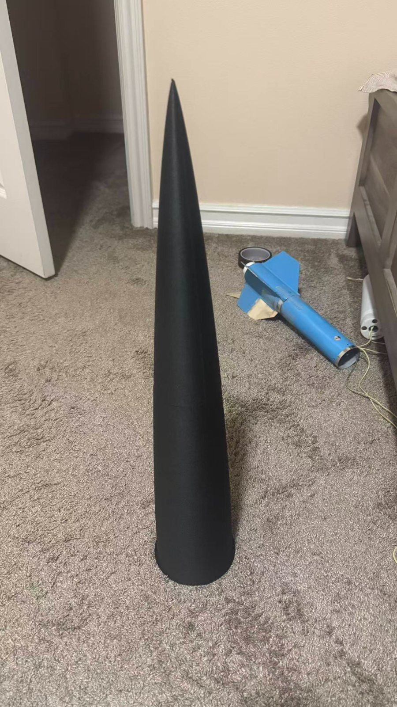
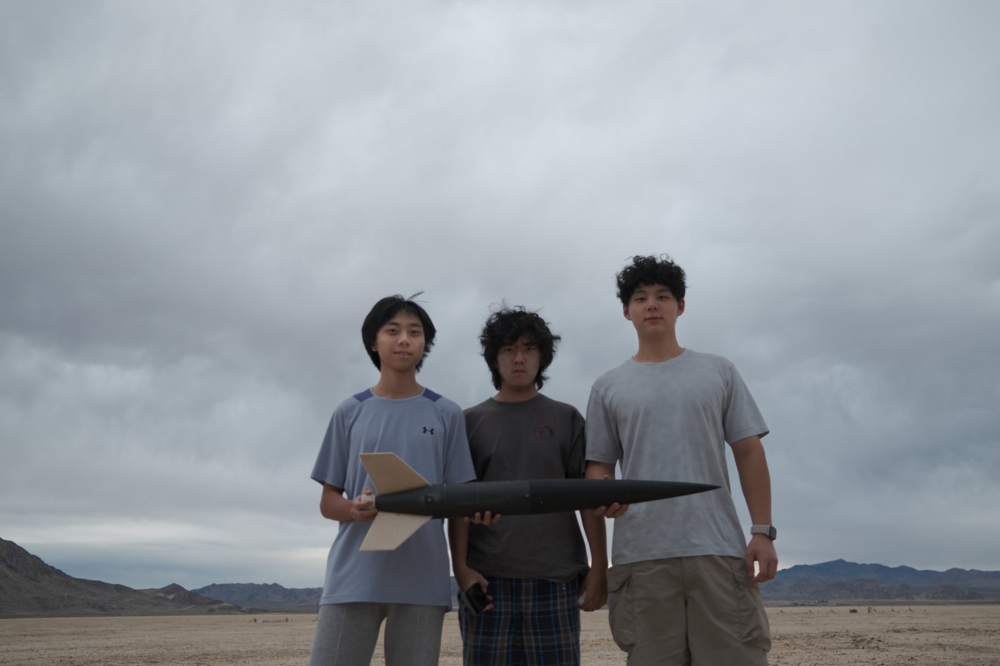

01 / Overview
Rocket Overview & Design Objectives
Thunder V2 is the rocket project documented here. The current record supports a flight-experience narrative, but it does not provide a complete, approved as-flown configuration package. The objectives below are conservative engineering inferences from the project and reported flight context, not documented acceptance criteria or proven outcomes.
I participated across the engineering cycle. I contributed to rocket structural design and CAD; fabrication and assembly of 3D-printed components; motor selection and delay adjustment; parachute and recovery-system configuration; launch-day preparation and field launch operations; and post-flight recovery inspection and analysis of the available flight-data summary. These statements describe my participation and do not imply sole ownership of all project work or establish technical outcomes that remain unsupported by original records.
Coherent configuration
Define a high-power rocket configuration with propulsion and recovery choices considered together.
Recoverable flight
Plan for a recoverable flight while keeping deployment timing and descent behavior open to evidence.
Altitude record
Capture a peak-altitude reading without treating one value as a complete measured flight profile.
02 / Vehicle
Rocket Configuration
Available records identify Thunder V2 and include a project-specific OpenRocket file. Locating that file establishes the existence of a design artifact only; Gate 0 did not establish an approved preflight prediction or confirm that the digital model matched the flown vehicle.
I contributed to Thunder V2's structural design and CAD, and I participated in fabricating and assembling 3D-printed components. The available record does not establish materials, print parameters, exact as-flown mass or dimensions, or structural-test results.
Project identity
Thunder V2 is the rocket project associated with this flight account.
Digital model
An OpenRocket file was found during evidence inventory; its prediction and as-flown fidelity are not approved.
As-flown vehicle
Exact launch mass, dimensions, materials, component fit, and physical configuration remain undocumented here.
No flight-computer test history is attributed to Thunder V2, and no claim is made that a separate avionics project flew on this rocket.

03 / Flight setup
Motor & Recovery Configuration
The following configuration details come from my account. They are traceable conversation claims, not independently verified as-flown measurements or findings from original setup documentation.
My participation included motor selection, setting the reported motor delay with a UDDT, and configuring the parachute and recovery system. The specific motor, delay, parachute, and JLCR details below remain User-reported until original flight-specific evidence is reviewed.
Flight-specific motor packaging, delay-setting evidence, recovery packing records, and setup photographs have not been reviewed. These details do not establish the deployment sequence or recovery outcome.
04 / Field operations
Flight Preparation & Launch
I participated in prelaunch preparation and field launch operations for the reported flight. This user-reported participation does not establish a complete preparation timeline, checklist completion, inspection sign-off, safety approval, launch date, launch location, weather, exact launch mass, or motor fit.
Available account
- H219T-14A motor selection
- UDDT adjustment to a reported 10-second delay
- 30-inch parachute and no JLCR
Flight-specific record
- Launch date, site, conditions, and personnel
- Completed preparation or safety checklist
- As-flown dimensions, mass, fit, and recovery sequence

05 / Instrument readout
AltimeterTwo Display Results
I participated in reviewing and analyzing the AltimeterTwo summary. The original display video has been reviewed and shows a peak altitude reading of 2,329 ft. This confirms the displayed value, not the instrument's measurement accuracy, its installation, or its association with an independently documented launch.
AltimeterTwo original display video · displayed peak altitude only; measurement accuracy and specific launch linkage remain unverified
No continuous measured curve is presented. The located OpenRocket artifact is not used as an approved preflight prediction, and no prediction-accuracy calculation is made. Video-confirmed but anomalous ejection and descent fields are not used to establish actual flight events.
06 / Recovery evidence
Recovery Observations & Limitations
I participated in post-flight recovery inspection. Original inspection records and specific outcomes have not been reviewed. The current evidence also supports my recovery-configuration report: a 30-inch parachute and no JLCR. It does not support a factual reconstruction of deployment timing, descent speed, event sequence, landing condition, or inspection findings.
Recovery hardware
30-inch parachute; no JLCR used on this flight.
Device summary
The display video confirms ejection and descent readouts, but their event classification is unresolved; they do not establish actual deployment timing or descent speed.
Observed outcome
No diagnosis or claim of recovery success, damage state, or event timing is made.
07 / Reflection
Engineering Challenges & Lessons Learned
Working across design, fabrication, flight operations, recovery inspection, and data review gave me a connected view of the project while also showing where the surviving evidence limits this account.
- CAD must stay connected to physical work. Participating in structural CAD and in fabricating and assembling 3D-printed components reinforced for me that a digital model and an as-built configuration are different records; the current evidence does not prove their exact equivalence.
- Flight configuration is a coupled decision. My participation in motor selection, delay adjustment, and parachute and recovery-system configuration highlighted how those choices belong in one traceable as-flown record, without implying that deployment timing or recovery performance was independently verified.
- Operations need contemporaneous evidence. Taking part in launch-day preparation and field launch operations showed me the value of preserving flight-specific setup records instead of reconstructing them later from recollection.
- A summary is not a complete flight profile. Reviewing the original AltimeterTwo display video confirmed what the device showed, but the displayed peak altitude cannot establish continuous ascent, ejection, descent, or recovery dynamics.
08 / Outlook
Next Steps & Evidence References
Current evidence basis
- Private conversation record: source of user-reported motor, delay, parachute, JLCR, and flight attribution details.
- Original AltimeterTwo display video: confirms the 2,329 ft screen reading, without independently verifying measurement accuracy or launch linkage.
- Gate 0 evidence inventory: records that a Thunder V2 OpenRocket artifact was located, not that its prediction was approved.
- Outstanding records requested by type: contemporaneous written record, flight card or launch log, flight-specific setup images, and recovery inspection notes.
Private links, local paths, raw project files, and unapproved photographs are intentionally not published here.